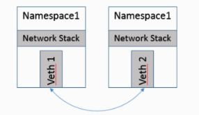
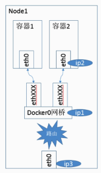

Docker 网络实现
平时在进行 Kubernetes 开发和运维的时候，接触到的最多的概念应该就是 Docker 与 Kubernetes 的网络概念了，尤其是 Kubernetes，各种各样的 IP，Port，有时候会混淆，因此有必要对 Docker 和 Kubernetes 的底层网络实现进行学习。这篇文章呢就先针对 Docker 的网络实现进行一下分析介绍。
Docker 网络基础
Docker 的网络实现主要利用到的还是 Linux 网络相关的技术，如 Network Namespace、Veth 设备对、网桥、iptables、路由。
Network Namespace 基本原理
作用可以用一句话概括：
实现 Linux 网络虚拟化，即容器间网络协议栈层面的隔离
通过 Network Namespace 技术就可以实现不同的 Docker 容器拥有自己完全隔离的网络环境，就像各自拥有自己独立的网卡一样。不同的 Network Namespace 下默认是不可以直接通信的。
Linux 的 Network Namespace 中可以有自己独立的路由表及独立的 iptables 设置来提供包转发、NAT 及 IP 包过滤等操作。为了隔离出独立的协议栈，需要纳入命名空间的元素有进程、套接字、网络设备等。进程创建的套接字必须属于某个命名空间，套接字的操作也必须在命名空间中进行。同样，网络设备也必须属于某个命名空间。因为网络设备属于公共资源，所以可以通过修改属性实现在命名空间之间移动。
Linux 的网络协议栈是非常复杂的，这里因为毕竟不是做系统底层开发，所以争取从概念层面对于 Linux 的 Network Namespace 这种网络隔离机制进行理解：
通过查阅相关书籍知道，Linux 网络协议栈为了支持 Namespace 这种隔离机制，方法就是让一些与网络协议栈相关的全局变量称为一个 Network Namespace 变量的成员，协议栈函数调用时指定 Namespace 参数，这个就是 Linux 实现 Network Namespace 的核心原理，通过这种方式，实现一些协议栈全局变量的私有化，保证有效的隔离。
新生成的 Network Namespace 里只有一个回环设备，其它网络设备都不存在，Docker 容器都是在启动时才创建和配置的这些网络设备。物理设备一般只能关联到 root 这个 Network Namespace 中，而虚拟的网络设备则可以关联到自定义的一些 Network Namespace 中，而且可以在这些 Namespace 中转移。
Network Namespace 代表的是一个完全独立的网络协议栈，即与外界是隔离的，可以理解为连网线都没连接的一台”主机“，因此如何实现 Network Namespace 下与外界进行网络通信是个问题，最基本的实现就是：Veth 设备对
注意：对于 Network Namespace 相关的操作可以使用 Linux iproute2 系列工具实现，要求 root 用户
Veth 设备对
Veth 其实就是虚拟的以太网卡，平时在 Linux 下配置以太网卡时我们一般见到的都是包含 ethxxx 这种名字，这里加了个 V，明显就是指虚拟的网卡。因此 Veth 设备对就更好理解了，刚才提到引入Veth设备对的核心目的就是是为了实现两个完全隔离的 Network Namespace 之间通信，说白了就是利用它可以直接将两个 Network Namespace 连接起来，所以Veth设备都是成对出现的，才称作是 Veth 设备对，最贴切的形容就是：像一对以太网卡，并且中间有一根直连的网线，就构成了所谓的设备对。既然是一对网卡，那么我们将其中一端称为另一端的peer。在 Veth 设备的一端发送数据时，它会将数据直接发送到另一端，并触发另一端的接收操作。

值得一提的是，在 Docker 实现中，将 Veth 的一端放进容器 Network Namespace 后，Veth 名称会被改为 eth… 不知道的还以为是本地网卡呢！
Linux 网桥
网桥的作用，顾名思义，就是一个桥接的作用，桥接的对象是如果网络设备，目的是实现各网络中的主机之间的相互通信。
网桥是一个二层的虚拟网络设备，把若干个网络接口“连接”起来，以使得网络接口之间的报文能够互相转发，二层网络的转发依据就是网络设备的 MAC 地址。网桥能够解析收发的报文，读取目标 MAC 地址的信息，和自己记录的 MAC 表结合，来决策报文的转发目标网络接口。为了实现这些功能，网桥是具有自学习功能的，它会学习源 MAC 地址。在转发报文时，网桥只需要向特定的网口进行转发，来避免不必要的网络交互。如果它遇到一个自己从未学习到的地址，就无法知道这个报文应该向哪个网络接口转发，就将报文广播给所有的网络接口（报文来源的网络接口除外），其中，为了适应网络拓扑的变化，网桥学习到的 MAC 地址表是有过期时间的，长时间北邮收到对应 MAC 回发的包，就认为设备已经不在那个转发端口上了，下一次给这个 MAC 的包就会以广播的形式转发。
Linux内核是通过一个虚拟的网桥设备（Net Device）来实现桥接的。这个虚拟设备可以绑定若干个以太网接口设备，从而将它们桥接起来，这种 Net Device 网桥和普通的设备不同，最明显的一个特性是它还可以有一个IP地址。这里说 Linux 网桥和传统的交换机概念还不能划等号，因为交换机是个单纯的二层设备，对于报文的操作要么转发要么丢弃，而 Linux 网桥除此之外，还有可能会将报文送至协议栈上层，即网络层，因此 Linux 网桥既可以看作二层设备，又可以看作三层设备。
Linux 路由
Linux 系统包含一个完整的路由功能。当 IP 层在处理数据发送或者转发时，会使用路由表来决定发往哪里。在通常情况下，如果主机与目的主机直接相连，那么主机可以直接发送IP报文到目的主机，这个过程比较简单。例如，通过点对点的链接或网络共享，如果主机与目的主机没有直接相连，那么主机会将 IP 报文发送给默认的路由器，然后由路由器来决定往哪里发送IP报文。 路由功能由 IP 层维护的一张路由表来实现。当主机收到数据报文时，它用此表来决策接下来应该做什么操作。当从网络侧接收到数据报文时，IP 层首先会检查报文的 IP 地址是否与主机自身的地址相同。如果数据报文中的 IP 地址是主机自身的地址，那么报文将被发送到传输层相应的协议中。如果报文中的 IP 地址不是主机自身的地址，并且主机配置了路由功能，那么报文将被转发，否则，报文将被丢弃。
Docker bridge 网络实现
Docker 支持下列四种网络模式：bridge 模式（默认）、none 模式、host 模式、container 模式。由于目前涉及到容器云运维的工作都是以 Kubernetes 为核心，而 Docker 的这四种网络通信模式中只有 bridge 模式在 Kubernetes 中被用到，因此主要是介绍一下 Docker 的 bridge 网络模式。
Docker 默认为容器采用 bridge 网络模式。在 bridge 模式下，Docker Daemon 首次启动时会创建一个虚拟的网桥，默认的名称是 docker0，然后在私有网络空间中给这个网桥分配一个子网（通常 IP 以 172 开头）。针对由Docker创建的每一个容器，都会创建一个之前讲的 Veth 设备对，其中一端关联到网桥上，另一端使用 Linux 的 Network Namespace 技术，映射到容器内的 eth0 (Veth) 设备，然后从网桥的地址段内给eth0接口分配一个IP地址，相应的 MAC 地址也根据这个 IP 地址进行相应的生成操作。（是的，你没看错，可以分配 IP…所以说不要当作是交换机）

经过 bridge 桥接之后，在同一台主机内的容器之间可以相互通信，不同主机上的容器暂时还不能相互通信，实际上它们甚至有可能在相同的网络地址范围内（不同主机上的docker0的地址段可能是一样的）。
Docker 网络局限与简单探讨
从 Docker 支持的网络模式上我们就能感受到，Docker 从一开始就没有考虑到这种大规模容器集群，容器跨主机通信的问题，像 Kubernetes 这种容器编排框架是之后才发布的，因此，Docker 网络最大的局限性就在于一开始没有考虑到多主机互联的网络解决方案。
从 Docker 的设计理念来讲，其一直以来的理念都是“简单为美”，Docker 最大的贡献就是让容器化这个提了几十年的概念在如今”飞入寻常百姓家“，我认为做到这一步其实已经是非常优秀了，这也是Docker迅速走红的一个原因。
综上，对于大规模的分布式集群，容器集群，如何实现容器间优雅的跨主机节点通信的问题，就由一些其它的框架来解决，比如之后要写的 Kubernetes，之后我会详细地介绍在 Kubernetes 中是如何解决其包含容器在内各个组件网络通信问题的。